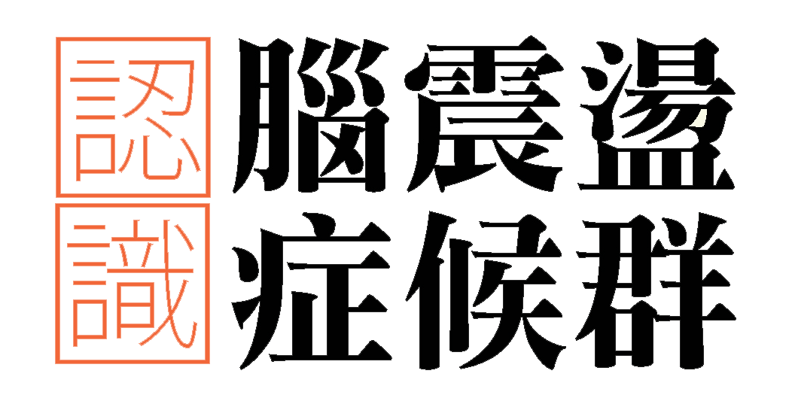

輕度頭部外傷患者一開始常會有頭痛、頭暈、容易疲倦、失眠等身體上的抱怨；後來以記憶力變差、注意力無法集中、易怒等情緒困擾為主，這些症狀可備統稱為「腦震盪症候群」。
幸運的是，多數輕度頭部外傷患者在受傷後三個月內，即可恢復到受傷前的狀態。
建議您在這段休養的期間內，工作的難度應該要逐漸增加，千萬不要急於要求自己馬上恢復至受傷前的表現。
這段期間要盡量避免增加大腦的負擔。當您一感到疲累時，請馬上放下手邊工作，讓大腦休息一下再繼續工作。
建議從過去經驗中找出您感到最放鬆、無負擔且無需耗費腦力的活動，做為您的休息方式最合適。
想要記下重要的事情時，在心裡頭提出許多相關的疑問，有助於更專注眼前，來幫助您記得更多。
將有限的精力放在重要事件上，盡量排除其他不必要的干擾，也不要同一時間做太多事。
用行事曆規畫行程，確保您會記得重要事件，無須分神去操心是否遺漏些什麼。
藉由多次默唸來加深印象。
在腦海裡想像一個畫面來強化印象，想像畫面越是具體鮮明，越能幫助您事後回想。
將新的資訊與原先熟悉的事物做連結，回想時便可利用熟悉的事物來幫助您回溯新資訊。
若您覺察到自己陷入負面想法的迴圈中的時候，請告訴自己「停！」，並且回過頭思考，事情是否真如您所想像的那麼糟，在日常生活中，也可多安排一些感興趣的活動，以提升低落心情。
發怒的原因通常是來自於疲倦感，因此，當您感到疲累不堪時，不妨重新調整行程表與步調，以避免負擔過重。而保持冷靜是問題解決的第一步，嘗試提醒自己「等三秒再開口」，並選擇適當的語氣及時機表達您的看法，或動腦想想其他解決辦法，皆有助於解決問題。
假如您有入睡困難、早醒、或睡眠品質不佳等情形，建議依照下列睡眠好習慣，以改善睡眠品質：
人們面對壓力事件時，會考量該壓力事件、環境限制或可運用之資源、及自身的能力水準，再根據整體評估結果選擇合宜的壓力因應方式：
而這段期間內除個人壓力調適之外，「週遭重要他人」的支持與陪伴亦相當重要，有助於患者受傷後的恢復。
若認為壓力事件能被解決，宜採用問題解決導向，消除壓力的根源。
若壓力事件不易被處理，則傾向採用情緒焦點導向，調適壓力事件帶來的負面感受。
而這段期間內除個人壓力調適之外，「週遭重要他人」的支持與陪伴亦相當重要，有助於患者受傷後的恢復。